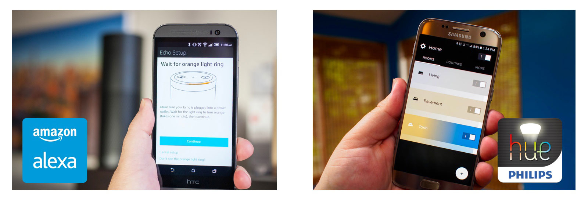
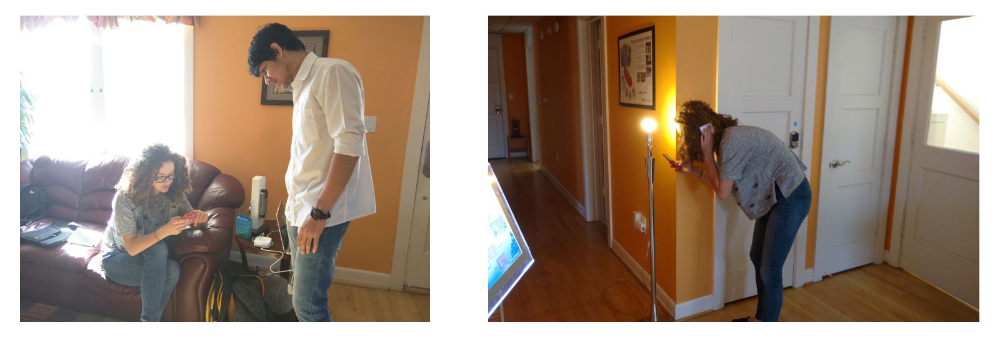

The Smart Home project is aimed to reduce the barrier to entry to the smart home technologies by developing an application that uses Z-wave protocol to quickly connect with as many smart devices as possible. The application will allow quick setup of the smart devices and allow the users to control them efficiently. The Smart Home project has the potential to create a sustainable solution to the current inefficient energy consumption system installed at home. The Smart Home application gives control to the user to setup smart systems, but at the same time makes smart decisions to save energy and track consumption.
Internet of Things (IoT) is here to stay and it is becoming ubiquitous in everyone’s daily lives to perform small but important tasks easily. With the invention in new technologies, the IoT devices are becoming small in size with more powerful features. As IoT becomes more prominent, the idea of ‘Smart Home’ is catching attention of more individuals. Companies like Phillips, Amazon, and Wink are actively involved in manufacturing self-integrated smart devices that allow the users to quickly plug-play with them and convert their homes into smart homes. However, the learning curve to install and setup these devices is steep, and this results in low adoption rate of the smart devices.
Smart Homes are a modern concept of connected home that provides power to the user to control multiple devices installed across home using a single interface. The more connected the devices, the more accessible they are. To have this connected network of connected devices, various protocols are existing in the market today that allow devices to talk to each other. Due to immature market, there is currently no standardization followed by smart device manufacturers and this causes inconvenience to the users since they are unable to use devices from different brands. For the Smart Home project we will use Z-wave protocol since it is one of the protocol with widest device support. It runs on a low frequency that reduces interference from most other protocols and devices.
The challenge we are looking at is the steep learning curve users have to go through to install and use smart devices at their home. Currently smart home devices are majorly used by IoT developers since they are fully aware of the functioning of the device and they use API’s to further customize device operations. However, this also means that a normal user with no IoT will have a hard time setting up these devices. This is one of the prime reason smart devices are not widely adopted yet. According to the report submitted by Accenture in 2014 (Fig. 1), there would be at least 30% households in the US using smart and connected devices. However, in the recent McKinsey report, it is presented that only 20% of the households have adopted to connected devices. This presents the slow nature of smart device adoption in the US households. Using the Smart Home application we aim to reduce difficulties encountered during the onboarding process and allow the users to control all their devices in a seamless manner. This will allow the users to stay updated about their house and at the same time make smart decisions quickly to save energy. This would reduce the amount of energy used by homes and create a sustainable impact.
As a President of Georgia Tech Net Impact Interdisciplinary Design Chapter, I led the team of four throughout this project. For four months, I tried hard to manage the time wisely and schedule each milestones accordingly. For this project, everyone participated in the research process as well as the ideation phase and the UI Design process.
January 2017 - May 2017
Geunbae Lee | Nishant Panchal | Jessica Tsui | Jayanth Mohana Krishna
Balsamiq Mockups | Sketch | Invision | Z-wave
To better understand our target users, we decided to conduct a short survey which consisted of a few questionnaires asking for their past experience with the smart IoT devices. For example, we asked questions related to their installation, configuration and interaction processes and experiences. The survey results were collected from novice to expert users of the smart IoT devices in both local and online communities. There were a total of 103 people who have answered our survey.
By collecting results from the survey and analyzing them, we came across a few interesting points:
• There are applications for each of the smart IoT devices which is hard to control all of them simultaneously
• It often takes a long time to configure the devices to the applications
• Since the smart IoT devices are products of different companies, the communication between them are challenging
• Sometimes, the users don’t use the in-depth functions of the applications but instead do simple things like turning the power on and off
Along the line of what people said about the smart IoT devices, we decided to look into a couple of applications which were Amazon Alexa app and Philips Hue app. The purpose of this was to discover some of these things:
• Pros and cons for using these mobile apps with the smart IoT devices
• General user flow for installing the device and interacting with the application to control the device
• Current UI Design techniques such as icons, colors and layouts that are implemented on the application
• Ratings, feedbacks and opinions of others of why the application does/doesn’t do well

By collecting results from the competitive analysis, we came across a few interesting points:
• Most of the applications are functional for one specific device
• Icons, symbols and labels differ across each applications which makes it hard for the users
• Based on the functionality and the motivation of the devices, the UI Design and the flow differs
• Pros and cons for using these mobile apps with the smart IoT devices
To better understand how people actually go through the installation process and interacting with the application to control the devices, we went on doing some task analysis on people who are interested in the smart IoT devices but haven’t used Amazon Alexa (Echo) or Philips Hue before. The main purpose of doing task analysis was to find out with our own eyes what was happening during these processes to better understand their general behavior as well as getting real-time feedback (hardships, surprises etc). We created a list of things that we wanted our participant to follow through which started from unpackaging the devices, installation and interacting with them. At the end of the tasks, we asked several follow-up questions about their overall experience and potential improvements.
While the participants were using the smart IoT devices and the applications provided by the companies, we observed, took notes and facilitated the sessions closely. If they had any questions regarding certain steps or had any comments, we asked them to express them anytime they felt comfortable. Also, we asked the participants to do think-aloud while they were going through each steps.

Some of the discoveries from the task analysis were very surprising and informative at the same time. From observing, taking notes of their think-aloud opinions and lastly, interviewing them at the end, we were found out that:
• Instruction for downloading the application inside the smart IoT device packages were not clear enough to follow quickly
• Some of the content and labels inside the applications weren’t clear and direct to the participants
• For Philips Hue, the participant suggested an easier way to interact with the device without having to go through so many unnecessary steps
• The UI Design doesn’t seem to be consistent overall
• The order for setting up the device on the application could be improved for better user experience
• Labeling the location of the device should have more functionality then the user just inputting the names (ex. Living room)
• Automatic location finder was suggested by one of the participants for faster installation
This project was an attempt at interfacing with a system that is being currently deployed at a lab called the Aware Home, which plans to have location-aware devices and monitoring. The project is being rolled out in stages, here is a brief overview of the technology that will work with the designs we created.
Our team worked in the first milestone, studying existing systems and addressing the pain points we found. Our design (explained above) was a step towards creating a unified user interface that will tie in with the system at large, working across different devices in different locations using different protocols.
The systems in the Aware Home communicate through a proprietary protocol called Z-wave, which was running on a Raspberry Pi based system. The app would hypothetically communicate with this system to monitor and control the devices. It had a user interface that was not very straightforward, which is why we picked the UI revamp as a challenge. We made some assumptions about the location-aware switches, which are planned to be deployed soon in the Home. While details were sparse about those, we were able to learn what functionality they will offer and incorporate them into our design about discovery of devices’ locations automatically. Over that, we added power monitoring features like what Aeotec Smart Plug offers.
The Smart Home project has the potential to impact the environment by utilizing energy more efficiently and creating a sustainable society. More the number of households using the smart home devices, higher will be the impact. The level of adoption of smart connected devices currently depend on the ease of learning how to use these devices in their existing home settings. The Smart Home project would allow users to quickly add smart devices in their home setting and use them with ease. This provides more control to the users and at the same time make smart decision to save energy. The statistics provided to the users enables them to quickly glance through any anomalies in the home energy consumption and fix any issues.
In the future, more smart and connected devices will be used in home setting and this project will provide impetus this initiative. The future is not far away when IoT based smart devices more accessible to general population. This would result in a sustainable and eco-friendly society.